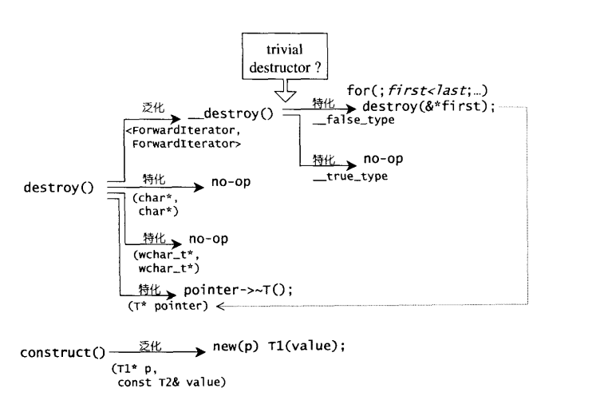

new、operator new、placement new
new是关键字。会调用operator new分配内存，由编译器调用构造函数生成类对象，返回相应指针。
但关键字是不可以重载的，调用构造函数也不需要重载，那么就单单需要重载operator new以适应不同的内存分配，因而c++将其设置为函数：
void* operator new (std::size_t size) throw(std::bad_alloc);
void* operator new (std::size_t size, const std::nothrow_t& nothrow_constant) throw();
void* operator new (std::size_t size, void* ptr) throw();
第一种和第二种可以进行重载。第三种为placem new版本，在指定内存地址调用构造函数。 new(0xffff123) int();
ptrdiff_t一般表示两指针差。
STL的空间配置器并不只是简单的将new和operator new进行简单的封装，而是另有妙招stl::alloc。STL将new的两阶段操作分离，内存配置由alloc::allocate(),内存释放由alloc::deallocate()负责，对象构造操作由::construct()负责，对象析构由::destroy()负责。
如果用户不定义析构函数，而是用系统自带的，则说明，析构函数基本没有什么用（但默认会被调用）我们称之为trivial destructor。反之，如果特定定义了析构函数，则说明需要在释放空间之前做一些事情，则这个析构函数称为non-trivial destructor。如果某个类中只有基本类型的话是没有必要调用析构函数的，delelte p的时候基本不会产生析构代码。
construct()和destroy()的示意如上，destroy对于迭代器类型的析构是威力巨大的，如若迭代器中的类型是否析构无关紧要，那么频繁的调用析构函数对性能你在巨大影响，因而，通过has_trivial_destructor进行判断。然而，c++并不存在对指针所指之物的类型判别，也不支持对对象析构函数是否为trivial的判断，那么是如何实现的？？
SGI设计了双层级配置器，第一级配置器直接使用malloc和free，第二级则视情况采用不同的策略：当配置区块超过128bytes时，视之为足够大，调用第一级配置器，当配置区块小于128bytes时，视之为过小，采用复杂的memory pool整理方式，而不再求助于第一级配置器，
mempry pool的实现：
维护start_free和end_free，内存池大小为两者之差，每次要通过内存池分配内存时，先检查内存池大小是否能够分配所有结点的内存，若能，分配；否则，如果能分配超过一个结点大小的内存，内存池将尽可能多的分配可以分配的结点数，返回；否则，内存池将从进程堆中申请内存，申请的大小是所需大小的两倍，加上一个随内存申请逐渐增大的变量（这个变量越大，代表着越多次的内存池大小不足的情况发生，意味着在接下来出现内存不足的情况更可能发生，因此额外多分配一些，以减小频繁分配内存的开销），如果可以分配，则调整start_free为新分配的堆内存起点，（但原内存池可能还有内存剩余，虽然不能覆盖一个当前结点的内存大小，不能浪费，于是将其编入适当的freelist结点中）；否则，搜索“尚未使用，且区块够大”的freelist结点(为什么不搜索小结点？书上认为是多进程的原因，我的看法与此不同，free_list的结点地址并不连续，多个小内存一并分配，是难以实现的。),若一切完毕后仍未有可用内存，尝试调用一级配置器，使用oom机制，这会导致内存情况的改善，或者抛出异常。